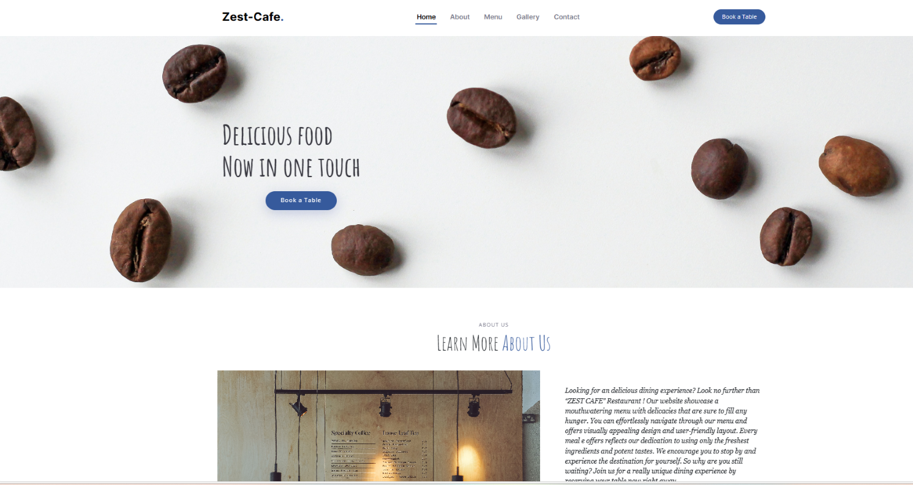
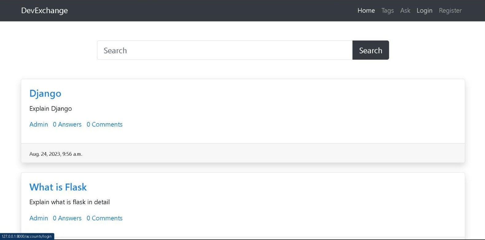
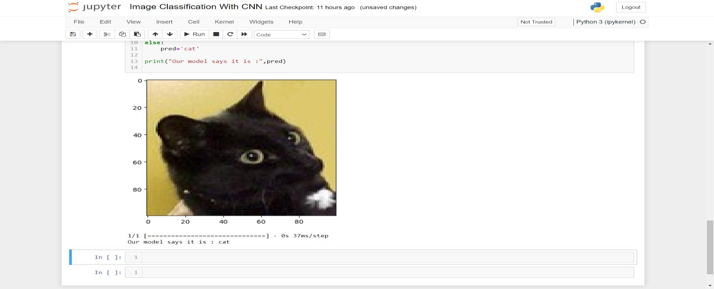

Module 1
PROJECT-SERVER CONNECTION
Abstract
This proposal outlines a holistic network design customized for the medical sector, harmonizing diverse technologies. It presents a hybrid network architecture linking hospital departments, along with features like secure guest Wi-Fi, intelligent room controls, fortified security measures, scalability for expansion, centralized management, and seamless IoT integration. The primary objective is to elevate guest experiences, optimize operational efficiency, and ensure the hospital's network infrastructure remains adaptable to forthcoming advancements. This integrated solution aims to revolutionize connectivity in healthcare, enhancing both patient satisfaction and operational agility.
Introduction to Problem
The medical industry faces operational challenges in managing doctor services and patient’s treatment efficiently. Manual systems servers often lead to errors and inefficiencies. Our project aims to address this by designing a network solution tailored to hospitals. We're focusing on creating an integrated network infrastructure that connects departments and enhances services, offering seamless connectivity and streamlined operations. Through this project, we aim to improve patients’ services and contribute to the modernization of hospitals network systems.
Proposed Solution
Our solution entails a comprehensive network design that integrates various technologies tailored to the medical industry. It encompasses a hybrid network architecture connecting hotel departments, while also offering secure guest Wi-Fi, smart room controls, robust security measures, scalability for future growth, centralized management, and IoT integration. This solution aims to enhance guest experiences, streamline operations, and future-proof the hospitals network infrastructure.
Implementation Details
- The strategy is to create a network that has highest quality and standards
- We can connect all the department on the hospitals directly with the router but its cost estimation is higher as compared to a switch
- We can also connect the PCs with a hub but it is inefficient because its speed of data transmitting is very unequal to a switch.
- So, we’ll use switch to connect the PCs and printers using Fast Ethernet cables with the switch which will be further be connected to Routers.
- By using different access point in every floor, it will enhance the speed of Wi-Fi
Design Documentation

Module 2 & 3
PROJECT-ZEST CAFE
Abstract
The website project is a dynamic, a user-friendly platform. T he website has an easy-to use layout that allows consumer to effortlessly navigate and explore the menu special and other restaurant information. To deliver an immersive user experience, the design is aesthetically attractive and include new design trends.CSS styling improves the websites appearance and feel, while JS coding provide interaction and functionally such as responsive navigation and smooth scrolling. Overall, the “Zest Café” Project is a complete solution for a restaurant wishing to improve its online presence.
Introduction to Problem
- The food dining and cafe industry is highly competitive. This poses a challenge for us as we need to find ways to stand out and attract customers.
- Customers often experience frustration due to long wait times and poor customer service in the food dining and cafe industry.
- Customers are increasingly looking for healthy and sustainable dining options.
- he food dining and cafe industry is often perceived as being outdated and lacking in innovation.
Proposed Solution
- Our unique approach is to offer a dining experience that customers can't find anywhere else.
- We aim to serve up unusual or exotic dishes and create a truly immersive dining environment.
- By doing so, we differentiate ourselves from our competitors and provide a memorable experience for our customers.
- We will achieve this by using organic ingredients, offering a wide range of vegan and vegetarian options, and implementing measures to compost food waste.
- By prioritizing health and sustainability, we can attract conscious customers and contribute to a better environment.
Implementation Details
- The strategy is to create a dining website with full functionality.
- Our unique approach is to offer a dining experience that customers can't find anywhere else.
- We will achieve this by using organic ingredients, offering a wide range of vegan and vegetarian options, and implementing measures to compost food waste.
- We acknowledge is the frustration customers often experience due to long wait times and poor customer service.
- We aim to serve up unusual or exotic dishes and create a truly immersive dining environment.
Design Documentation
Module 4
PROJECT-DevExchange
Abstract
In today's dynamic tech landscape, knowledge sharing and collaboration are vital. This project aims to build a vibrant online community platform using Django, where technology enthusiasts can connect, discuss programming and tech-related topics, and receive AI-powered doubt clearance assistance. The platform, named "DevExchange," fosters an environment of learning, engagement, and innovation.
Introduction to Problem
In the realm of technology and programming, the absence of a unified platform for collaborative learning, AI-driven doubt resolution, and community interactions presents a significant challenge. Current solutions are often fragmented, lacking the ability to provide contextually relevant responses to user queries. To address this, we introduce "DevExchange." It's a purpose-built platform powered by Django and integrated with the OpenAI API, offering a centralized space where tech enthusiasts can connect, engage, and access AI-powered responses
Proposed Solution
DevExchange ingeniously combines the robust support of a thriving tech community with the precision and efficiency of AI, creating a symbiotic relationship where each element not only complements but also keeps the other in check. The community- driven aspect encourages vibrant interactions, diverse insights, and personalized responses, promoting collaborative learning. Simultaneously, AI offers immediate, consistent assistance and evolves through continuous learning. This harmonious partnership not only redefines knowledge-sharing within the tech community but also ensures that the strengths of one component offset the limitations of the other, creating a dynamic, inclusive, and engaging platform where users benefit from both human experience and AI-powered solutions.
Design Documentation

Module 5
PROJECT-Image Classification using Convolutional Neural Networks
Abstract
This project focuses on creating an image classification system to differentiate between images of cats and dogs, employing Convolutional Neural Networks (CNNs). The initiative involves data collection and preprocessing, designing a tailored CNN architecture, and training and evaluating the model. The project's significance lies in its potential applications, from lost pet identification to wildlife monitoring and security. By showcasing the practicality of CNNs in solving real-world image classification challenges, this project serves as a compelling example of the power of deep learning in computer vision.
Introduction to Problem
Convolutional Neural Networks (CNNs) have revolutionized the field of computer vision by excelling in tasks such as image classification, object detection, and image recognition. CNNs are capable of learning hierarchical features directly from image data, making them a powerful tool for a wide range of applications. This project centers on the utilization of CNNs, irrespective of the specific classification task. While the problem of distinguishing between cats and dogs serves as a common and illustrative example, the primary focus is on exploring the capabilities of CNNs and demonstrating their adaptability to a variety of image classification challenges. By harnessing the potential of CNNs, this project highlights their versatility and underscores their pivotal role in the realm of computer vision, with applications spanning from medical image analysis to autonomous vehicles and beyond. The project aims to shed light on the capabilities and opportunities afforded by CNNs in solving complex real-world problems that rely on image data.
Proposed Solution
The proposed solution involves creating an accurate image classification system using Convolutional Neural Networks (CNNs) to distinguish between cat and dog images. Key steps include collecting diverse data, designing a specialized CNN model, training with data augmentation, and deploying the model via a user-friendly interface for real-time image classification. The project emphasizes CNN versatility and real-world applications in areas like pet care and wildlife monitoring while providing a foundation for broader computer vision applications. It aims to showcase the power of deep learning in solving image classification challenges through user interaction. Comprehensive documentation will promote knowledge sharing and future research.
Design Documentation
